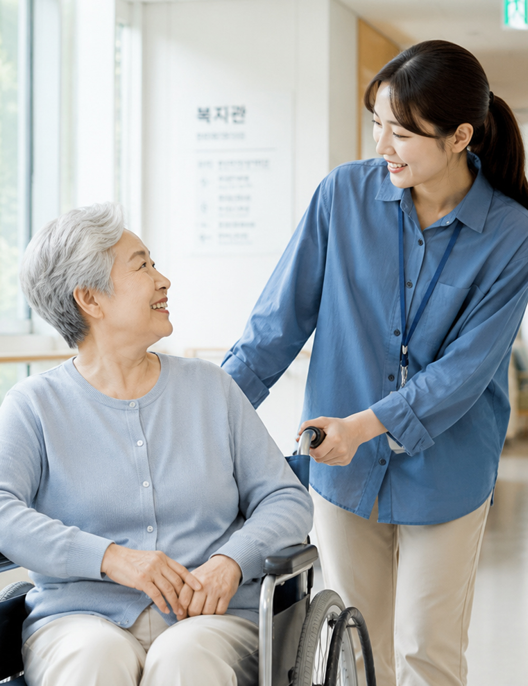
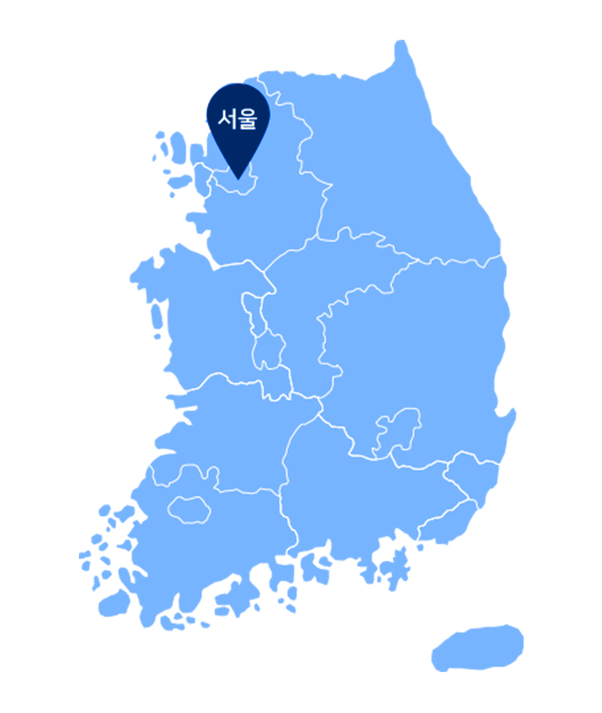

개강예정
09.05
토요일 개강
사람을 잇고, 더 나은 일상을 만드는 전문 자격
취업·재취업
취업·재취업
새로운 삶을 위한
확실한 선택!
이론부터 현장실습까지 한 번에.
체계적인 학습관리로 자격증
취득을 준비하세요.

사회복지사 2급 가장 빠른 개강일정
개강예정
09.28
월요일 개강
자격 취득 기간을 효율적으로 단축
현재 학력과 이수 이력을 확인해 불필요한 과목 없이 필요한 과정만 설계합니다.
최종학력과 보유 학점, 기존 이수과목을 확인합니다.
자격 취득에 필요한 과목과 예상 기간을 안내합니다.
학습자 상황에 맞춰 필요한 과정만 효율적으로 이수합니다.
학점 인정과 자격증 신청 절차를 순서대로 진행합니다.
부담은 낮추고, 준비는 한 번에 패키지 할인
최종학력과 이수 이력에 맞춰 필요한 과정만 합리적으로 설계합니다.
나에게 맞는 학습과정 플랜
최종학력과 보유 학점에 따라 필요한 학기와 이수과목을 체계적으로 설계합니다.
PLAN A
6개월 안에 취득 가능
전문대 졸업 이상 학습자
1년 6개월 과정이, 9월 5일 개강반 시작 시
01
1학기
사회복지사 관련
8과목 24학점 이수
02
2학기
사회복지사 관련
6과목 18학점 이수
03
3학기
사회복지사 관련(실습 포함)
3과목 9학점 이수
GOAL
자격증 취득
17과목 51학점
사회복지사 2급 취득
PLAN B
1년 6개월 안에 취득 가능
고등학교 졸업 이상 학습자
2년 과정이, 9월 5일 개강반 시작 시
01
1학기
사회복지사 관련
8과목 24학점 이수
02
2학기
사회복지사 관련
6과목 18학점 이수
03
3학기
전공 3과목 + 교양 3과목
6과목 18학점 이수
04
4학기
교양 7과목
21학점 이수
GOAL
자격증 취득
총 80학점 이수
전문학사 학위 + 사회복지사 2급
* 고졸 학력자 기준 독학사 또는 학점인정 자격증 병행 시 3학기 과정으로 취득 가능
학습 전 꼭 확인하는 개정안내
학습 시작 시점에 따라 이수과목과 현장실습 기준이 달라질 수 있으므로 기준을 확인해 주세요.
구분
개정 전
(2019년 12월 31일까지)
개정 후
(2020년 1월 1일 이후)
학습
시작시점
시작시점
2019년 12월 31일 이전에 사회복지사 관련 과목을 1과목이라도
수강을 시작한 경우
2020년 1월 1일 이후에 사회복지사 2급 취득과정을 처음 시작한 경우
총
이수학점
이수학점
법령에서 정한 사회복지사 관련
14과목(42학점)
이수
법령에서 정한 사회복지사 관련
17과목(51학점)
이수
필수과목
10과목
사회복지개론, 사회복지법제, 사회복지실천기술론, 사회복지실천론, 사회복지정책론, 사회복지조사론, 사회복지행정론, 사회복지현장실습, 인간행동과사회환경, 지역사회복지론
10과목
사회복지학개론, 사회복지법제와실천, 사회복지실천기술론, 사회복지실천론, 사회복지정책론, 사회복지조사론, 사회복지행정론, 사회복지현장실습, 인간행동과사회환경, 지역사회복지론
선택과목
4과목
가족복지론, 노인복지론, 아동복지론, 여성복지론, 의료사회사업론, 장애인복지론, 정신건강론, 청소년복지, 학교사회사업론 중 4과목 이수
7과목
가족복지론, 노인복지론, 여성복지론, 의료사회복지론, 장애인복지론, 정신건강론, 청소년복지론, 학교사회복지론, 자원봉사론, 가족상담 및 가족치료, 아동복지론 중 7과목 이수
사회복지
현장실습
현장실습
사회복지현장실습 선정기관에서
120시간
현장실습 진행
사회복지현장실습 선정기관에서
160시간
현장실습 진행
사회복지사 2급 전과목 개설
필수과목과 선택과목을 확인하고, 개설 과목을 색상으로 구분해 보세요.
필수과목
사회복지학개론
사회복지법제(와실천)
사회복지실천론
사회복지실천기술론
사회복지정책론
사회복지조사론
사회복지행정론
사회복지현장실습
인간행동과사회환경
지역사회복지론
선택과목
노인복지론
가족복지론
정신건강론
자원봉사론
청소년복지론
장애인복지론
여성복지론
학교사회사업론(학교사회복지론)
의료사회사업론(의료사회복지론)
가족상담 및 가족치료(가족상담 및 치료)
아동복지론
교정복지론
사회보장론
사회문제론
산업복지론
사회복지윤리와철학
정신보건사회복지론(정신건강사회복지론)
사회복지지도감독론
사회복지자료분석론
프로그램개발과 평가
사회복지발달사(사회복지역사)
국제사회복지론
복지국가론
빈곤론
사례관리론
사회복지와 인권
사회복지와 문화다양성
색상 표시된 과목은 개설된 과목입니다.
전국에서 확인하는 지역별 센터 안내
권역과 지역을 선택해 센터명, 주소, 대표전화를 확인하세요.

지역 버튼을 선택하면 해당 지역 지도로 변경됩니다.
1관 : 서울시 강북구 덕릉로 108, 현웅빌딩 3층
2관 : 서울시 강북구 도봉로 261, 수유프라자 5층 대표전화 : 02-980-62377, 02-980-2381
성수IT종합센터(아크밸리) 5층 대표전화 : 02-3395-1500
왜 이음 평생교육원 일까요?
교육부 평가인정
정식 학점은행제 교육과정을 기준으로 안내합니다.
전담 플래너
학력과 목표에 맞춘 맞춤 학습설계를 제공합니다.
실습 일정 안내
지역과 일정, 준비사항을 체계적으로 안내합니다.
행정절차 지원
학점 인정부터 자격 신청까지 순서대로 지원합니다.
모바일 수강
시간과 장소에 구애받지 않고 학습할 수 있습니다.
학습 일정 관리
출석·과제·시험 일정을 놓치지 않도록 안내합니다.
언제 어디서나 편리하게
언제 어디서나 이어지는
언제 어디서나 이어지는
더 편리한 수강지원
PC와 모바일에서 자유롭게 수강하고,
학습 진도와 주요
학사일정까지 편리하게 관리하세요.
시간과 장소에 구애받지 않는
학습 환경을 제공합니다.
- Windows
- macOS
- Android
- iOS
스마트 학습가이드 제공
GUIDE 01
사회복지사 현장실습 가이드
실습기관 선정부터 신청 절차와 준비사항을 안내합니다.
GUIDE 02
토론 제출 가이드
토론 참여 방법과 주제별 작성 요령을 제공합니다.
GUIDE 03
과제 작성 가이드
과제 작성 순서와 제출 전 체크사항을 제공합니다.
지금 받을 수 있는 특별한 혜택
수강료 할인
기간 한정 패키지 수강 혜택
1:1 학습설계
학력과 목표에 맞춘 과정 안내
모바일 수강
시간과 장소 제약 없이 학습
현장실습 안내
지역·일정·준비사항 안내
학습가이드 제공
과정별 필수 자료 지원
행정절차 지원
학점 인정과 자격 신청 안내
FREE CONSULTING
사회복지사 2급,
사회복지사 2급,
나에게 맞는 과정부터
확인하세요
최종학력과 이수과목을 기준으로 학습기간과 자격증 취득과정을 안내해 드립니다.